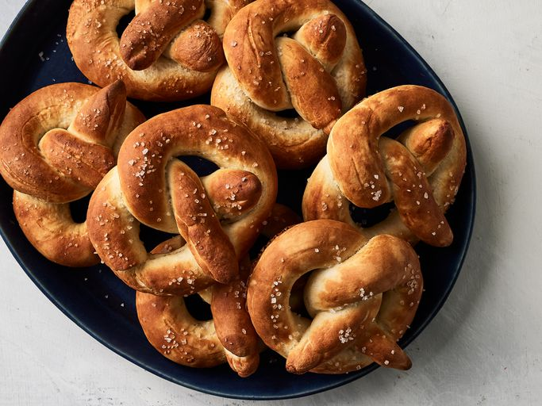

Homemade Pretzels

This homemade pretzel recipe is great! After spending so much money on those mall pretzels, I thought I'd try making some myself. They are a bit sweeter than other types and are buttery. Dip the hot pretzel in melted butter and coat with your favorite flavors.
Ingredients
- Water: You’ll need 5 ¼ cups of water, divided.
- Yeast: The recipe starts with four teaspoons of active dry yeast dissolved in water with sugar.
- Sugar: Dissolve a teaspoon of white sugar with the yeast and use ½ cup white sugar for the dough.
- Flour: All-purpose flour gives the pretzel dough structure.
- Salt: You’ll need salt for the dough and to sprinkle on top of the pretzels.
- Oil: Coat a bowl with vegetable oil before you let the dough rise.
- Baking soda: Baking soda acts as a leavener, which means it helps the dough rise.
Instructions
- Activate the yeast with sugar and water.
- Make the dough and knead it into a ball.
- Place the dough ball in an oil bowl, turning the ball to coat.
- Cover and let rise.
- Turn the dough out, divide into equal pieces, roll into ropes, and shape into pretzels.
- Dip each pretzel in a mixture of hot water and salt.
- Sprinkle with salt and bake until brown.
Back to Menu